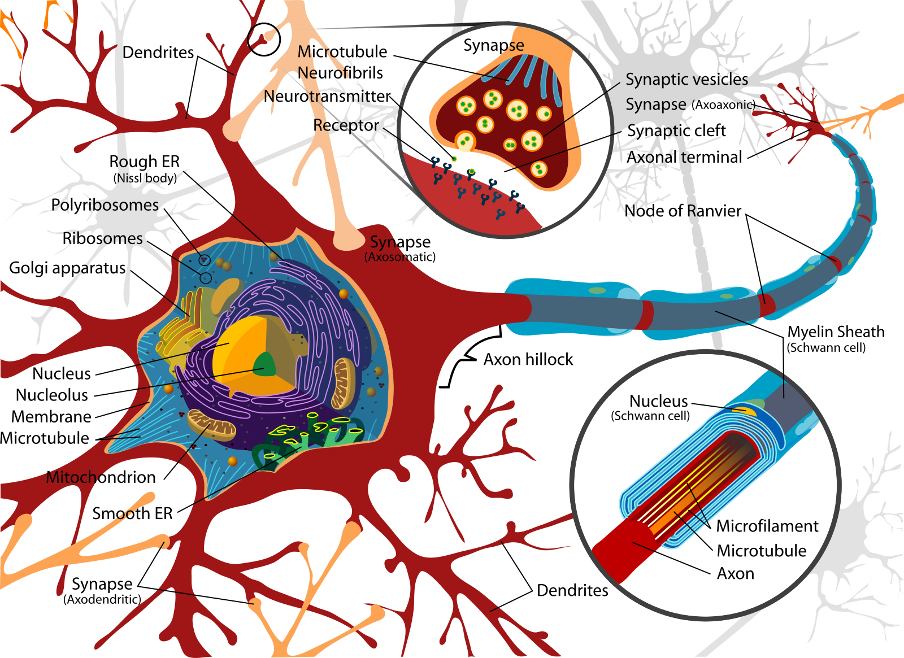
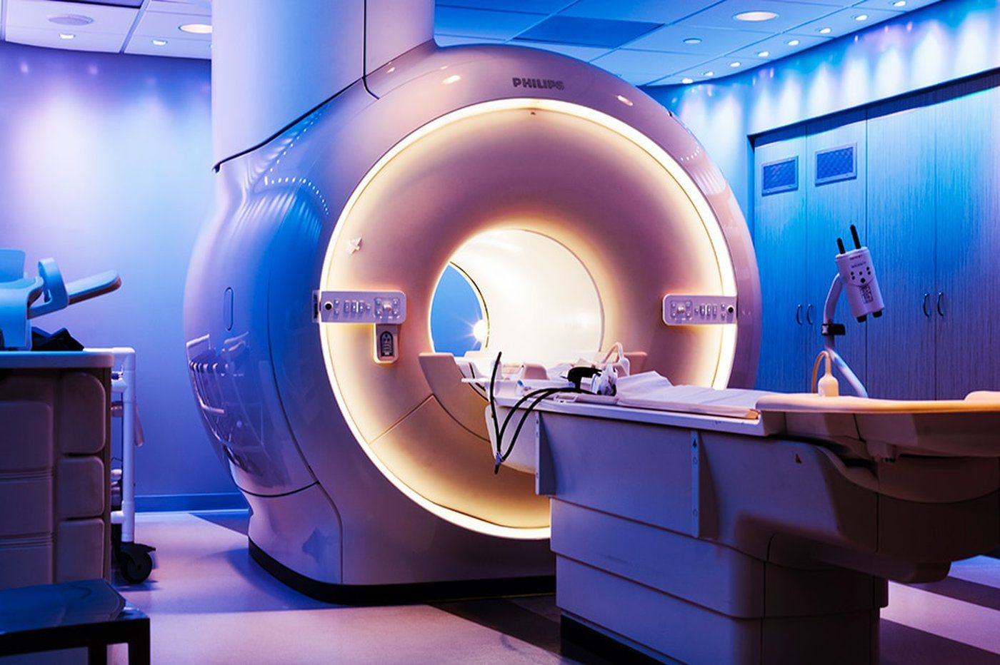
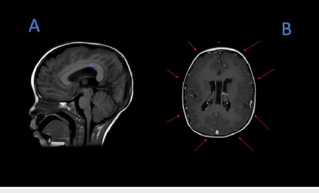

Lecture Notes#
Brain Structure#
Microscale
Neurons and glia; myelin speeds conduction; demyelination impacts function.
Macroscale
Cortex, cerebellum, brainstem, corpus callosum. Distributed networks enable cognition (often small-world & modular).
Neuron Anatomy#

This diagram shows the soma (with nucleus, nucleolus, mitochondria, rough/smooth ER), dendrites with synapses, and the axon hillock extending into a myelinated axon with Schwann cells and nodes of Ranvier. It highlights how neuronal structure supports electrical excitability and chemical transmission.
Default Mode Network (DMN)#

Default Mode Network regions from a literature review.

Main regions of the DMN (yellow) and connectivity between them color-coded by structural traversing direction (xyz → rgb).
Modality Cheat-Sheet#
Modality |
Measures |
Temporal |
Spatial |
Invasiveness |
Typical Uses |
|---|---|---|---|---|---|
Structural MRI (T1/T2/FLAIR) |
Anatomy |
— |
mm |
Non-invasive |
Tumors, morphometry, tract context |
CT |
X-ray density |
— |
mm |
Ionizing |
Acute bleed, bone |
fMRI (BOLD) |
Hemodynamic proxy |
s |
mm |
Non-invasive |
Cognitive mapping, resting-state |
EEG |
Scalp voltages |
ms |
cm (inverse-limited) |
Non-invasive |
Fast dynamics, oscillations, BCIs |
MEG |
Magnetic fields |
ms |
~cm |
Non-invasive |
Millisecond timing + decent localization |
fNIRS |
Hemoglobin changes |
s |
cm (surface) |
Non-invasive |
Bedside, pediatrics |
PET |
Radiotracers |
min |
mm–cm |
Radioactive |
Molecular targets |
Example Images#
MRI

Magnetic Resonance Imaging (MRI) scanner. Non-invasive technique using magnetic fields and radiofrequency pulses to produce high-resolution images of soft tissues.

(A) MRI T1 sequence, thickening of the corpus callosum (blue asterisk). (B) MRI T1 sequence, pachygyria (red arrows), subependymal neuronal heterotopias (orange asterisk).
EEG

EEG cap placement. Non-invasive scalp electrodes allow recording of brain oscillations with millisecond resolution.
EEG analysis pipeline: preprocessing → filtering into frequency bands (δ, θ, α, β, γ) → source localization → Hilbert envelopes → functional brain networks.
Pipeline for Neuroimaging ML#
Acquisition → metadata (TR/slice timing, channel montage, filters)
Pre-processing
MRI/fMRI: motion, slice timing, distortion, co-registration, normalization; denoise confounds
EEG/MEG: filtering, bad channels, ICA/SSP for EOG/EMG/ECG, re-reference, epoching
Features
MRI: volumes, cortical thickness/shape, tractography; parcellation → connectomes
fMRI/EEG/MEG: GLMs; resting-state networks; spectra (α, β, γ), ERPs/ERFs; connectivity (coherence/PLV)
Models: regularized ML for low-N/high-D; deep nets for large cohorts or with SSL
Validation: subject/site CV; leakage control; pre-registered metrics
Interpretation: saliency in brain space; ROI ablations; uncertainty
Case Vignettes#
Sleep & Memory — Spindles/slow waves show distinct hemodynamic correlates; selective processing persists in light NREM.
Resting-State (DMN) — Task-negative network; subject fingerprints; predicts task recruitment.
Language — Wernicke (comprehension) & Broca (production/structure) with task/multimodal activations.
Reward — Basal ganglia & midline cortices track reward type/value; shared cores + specific patterns.
BCIs — Intracortical arrays can control robotic arms (e.g., BrainGate2).
Visual Extras#

Transcranial Magnetic Stimulation (TMS). A magnetic coil placed over the scalp generates a magnetic field that induces an electric current in underlying cortical tissue. Depending on coil placement, regions such as the motor cortex or dorsolateral prefrontal cortex can be selectively stimulated.
Practical Design Patterns for Clinics#
If task performance is impossible: use resting-state fMRI to predict task maps; validate with intra-op mapping if available.
Focal epilepsy: semi-auto lesion segmentation with radiologist-in-the-loop weak labels.
EEG for depression: multichannel features (band powers, asymmetry, coherence/PLV), robust subject-wise CV, site harmonization.
Neuroeducation: start with eye-tracking + behavior; add EEG/fMRI on subsets for latent-state modeling.